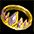
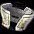
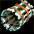
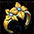

アイテム再構成の魔法書

再構成時、元のアイテムに付加していたオプションはなくなる。
| 出現アイテム一覧 | |||
|---|---|---|---|
| レア度★★★★ | レア度★ | ||
| ブルーベルベット | 霧の隠れ蓑 | ||
| ドレイクプルーム | 地上の権勢 | ||
| サリーンイントルーダー | ネクロキャビティ | ||
|  | 精霊王の冠 | ホワイトナイン | |
| ユニコーンの腕輪 | ソリティアサーパント | ||
| 迷える追跡人 |  | 黒鉄帽 | |
| 黄金ブーツ | ザ・ストライダー | ||
| リフレクションコーティング | クレマーメビウス | ||
| レア度★★★ | 鳳凰章 | ||
| スターチャイルド | ムーンライトストーカー | ||
| スタチューブーツ | ホロウサークルズ | ||
| バッサドラッヘ | 見張り人の目 | ||
| フォームガード | タートクラフトの婚約指輪 | ||
| 騎士用ベルト | モダンマジシャン | ||
| 女神の息吹 | ヒーローズプルーフ | ||
| ブラックオーラ | ローゼンメモリー | ||
|  | カンニバリスター | シュトゥルムの風 | |
| シグの呪い | クルブームの皮 | ||
| ボルテックステクスチャー | インクイジター | ||
| ホバーピラー | フローズンコイル | ||
| バイタルシーカー | |||
| アズラエルのフルアーマー | |||
| レア度★★ | |||
| 天竜のベルト | |||
| エンジェルローブ | |||
| バタフライスティング | |||
| 太極リング | |||
| 軍楽隊の兵士 | |||
| タレンテッドリーダー | |||
|  | 花の乙女のサークレット | ||
| トロールフリース | |||
| テスラループ | |||